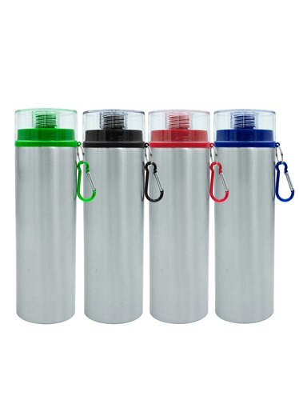
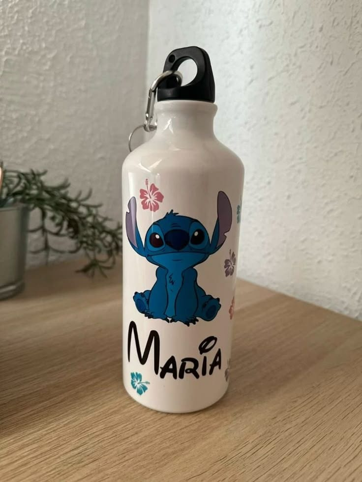

Sublimación en Botellas
La sublimación en botellas es un proceso mediante el cual se transfiere una imagen o diseño a una botella, generalmente de aluminio o acero inoxidable con recubrimiento de poliéster, mediante calor y presión. Este método es ideal para personalizar botellas con logotipos, frases, nombres o imágenes a todo color.
¿Qué necesitas para sublimar botellas?
- Botellas especiales para sublimación (con recubrimiento de poliéster)
- Impresora con tinta de sublimación
- Papel para sublimación
- Prensa térmica para botellas o resistencia cilíndrica
- Cinta térmica resistente al calor
- Diseño digital (en formato JPG, PNG o PDF)

Pasos para sublimar una botella
- Diseña tu imagen: Crea o selecciona el diseño que deseas imprimir. Asegúrate de que tenga la resolución adecuada.
- Imprime el diseño: Utiliza una impresora con tinta de sublimación y papel especial. Recuerda imprimirlo en modo espejo (espejado).
- Prepara la botella: Limpia bien la superficie para eliminar polvo o grasa. Asegúrate de que esté seca.
- Pega el diseño: Coloca el diseño impreso sobre la botella y fíjalo con cinta térmica.
- Coloca en la prensa: Usa una prensa térmica para botellas o una resistencia cilíndrica. Ajusta temperatura y tiempo (usualmente 180°C por 180 segundos).
- Enfría y retira: Una vez terminado el tiempo, retira con cuidado el papel y deja enfriar la botella.

Consejos útiles
- Utiliza botellas de calidad certificada para sublimación.
- Prueba primero con una botella de muestra para ajustar bien temperatura y tiempo.
- Evita tocar el diseño recién sublimado con los dedos, ya que puede estar muy caliente.
- Almacena las botellas en un lugar seco antes de usarlas.

Con la técnica de sublimación puedes lograr acabados vibrantes, duraderos y resistentes al uso cotidiano. ¡Es ideal para regalos personalizados, merchandising y más!